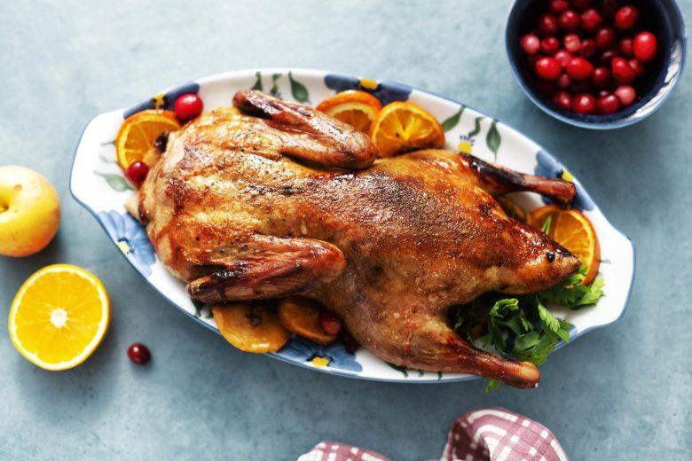

Receita de pato com laranja
Modo de preparo

Descasque as batatas e cozinhe até ficarem al dente. Retire toda a...
Ingredientes
- 1 pato inteiro limpo
- 500g batata pequena
- Suco de 3 laranjas
- Suco de 1 limão
- 100g de açucar
- 12 xícaras de óleo
- Pimenta do reino
- Sal
- 20g de salsinha picada